Week 3: From PGMs to Causal Diagrams
DSAN 5650: Causal Inference for Computational Social Science
Summer 2026, Georgetown University
Wednesday, June 3, 2026
Schedule
Today’s Planned Schedule:
| Start | End | Topic | |
|---|---|---|---|
| Lecture | 6:30pm | 6:45pm | HW1 Questions and Concerns → |
| 6:45pm | 7:15pm | Causality Recap → | |
| 7:00pm | 7:30pm | Motivating Examples: Causal Inference → | |
| 7:30pm | 7:45pm | Your First Probabilistic Graphical Model! → | |
| Break! | 7:45pm | 8:00pm | |
| 8:00pm | 9:00pm | PGM “Lab” → |
\[ \DeclareMathOperator*{\argmax}{argmax} \DeclareMathOperator*{\argmin}{argmin} \newcommand{\bigexp}[1]{\exp\mkern-4mu\left[ #1 \right]} \newcommand{\bigexpect}[1]{\mathbb{E}\mkern-4mu \left[ #1 \right]} \newcommand{\definedas}{\overset{\small\text{def}}{=}} \newcommand{\definedalign}{\overset{\phantom{\text{defn}}}{=}} \newcommand{\eqeventual}{\overset{\text{eventually}}{=}} \newcommand{\Err}{\text{Err}} \newcommand{\expect}[1]{\mathbb{E}[#1]} \newcommand{\expectsq}[1]{\mathbb{E}^2[#1]} \newcommand{\fw}[1]{\texttt{#1}} \newcommand{\given}{\mid} \newcommand{\green}[1]{\color{green}{#1}} \newcommand{\heads}{\outcome{heads}} \newcommand{\iid}{\overset{\text{\small{iid}}}{\sim}} \newcommand{\lik}{\mathcal{L}} \newcommand{\loglik}{\ell} \DeclareMathOperator*{\maximize}{maximize} \DeclareMathOperator*{\minimize}{minimize} \newcommand{\mle}{\textsf{ML}} \newcommand{\nimplies}{\;\not\!\!\!\!\implies} \newcommand{\orange}[1]{\color{orange}{#1}} \newcommand{\outcome}[1]{\textsf{#1}} \newcommand{\param}[1]{{\color{purple} #1}} \newcommand{\pgsamplespace}{\{\green{1},\green{2},\green{3},\purp{4},\purp{5},\purp{6}\}} \newcommand{\pedge}[2]{\require{enclose}\enclose{circle}{~{#1}~} \rightarrow \; \enclose{circle}{\kern.01em {#2}~\kern.01em}} \newcommand{\pnode}[1]{\require{enclose}\enclose{circle}{\kern.1em {#1} \kern.1em}} \newcommand{\ponode}[1]{\require{enclose}\enclose{box}[background=lightgray]{{#1}}} \newcommand{\pnodesp}[1]{\require{enclose}\enclose{circle}{~{#1}~}} \newcommand{\purp}[1]{\color{purple}{#1}} \newcommand{\sign}{\text{Sign}} \newcommand{\spacecap}{\; \cap \;} \newcommand{\spacewedge}{\; \wedge \;} \newcommand{\tails}{\outcome{tails}} \newcommand{\Var}[1]{\text{Var}[#1]} \newcommand{\bigVar}[1]{\text{Var}\mkern-4mu \left[ #1 \right]} \]
Logistics
🆕 JAH AutoHinter Documentation at jjacobs.me/jah 🆕
HW1 Questions / Concerns?
Labs + Reading Adventures coming this+next week:
| Labs | Reading Quests |
|---|---|
Lab 1: Novelty and Resonance in French Revolution Debates #InformationTheory#TextAnalysis |
RQ 1: How to Do Things with Rhetoric #InformationTheory#TextAnalysis#WarsOfIdeas
|
Lab 2: Optical Illusions as Causal Colliders #CausalGraphs#MindPlayinTricksOnMe#WebPPL |
RQ 2: Hitler’s Willing Executioners? (Imai 2018) #EcologicalInference#PyMC |
Lab 3: DW-NOMINATE, Latent Ideology, and Campaign Financing #LatentVariables |
RQ 3: PGMs for Horowitz (1985), Ethnic Groups in Conflict #PGMs#Operationalization |
W02 Recap: Aleatory vs. Epistemic Probability
- Social science, with “science” used in the same sense as for physics, may be a quixotic endeavor1
- Instead, we’ll do social science, where we use data to…
- Infer tendencies: \(\mathsf{H}\) = «\(X\) tends to cause \(Y\)»
- With some degree of veracity: \(\Pr(\mathcal{H}) \approx 0.7\)
- Construct models that we can update with new evidence: Bayes’ rule! \(\Pr(\mathcal{H} \mid E) = \frac{\Pr(E \mid \mathcal{H} ) \Pr(\mathcal{H})}{\Pr(E)} \approx 0.8\)
- Notice “slippage” between aleatory probability within \(\mathcal{H}\) (“tends to”) vs. epistemic probability “outside of”, talking about \(\mathcal{H}\) (“I’m 70% confident about \(\mathcal{H}\)”)
Disclaimer: Unfortunate Side Effects of Engaging Seriously with Causality
You’ll no longer be able to read “scientific” writing without striking this expression (involuntarily):
“Scientific” talks will begin to sound like the following:

Blasting Off Into Causality!

Data-Generating Processes (DGPs)
- You saw this in DSAN 5100!
- «\(X_1, \ldots, X_n\) drawn i.i.d. Normal, mean \(\mu\) variance \(\sigma^2\)» characterizes DGP of \((X_1, \ldots, X_n)\)
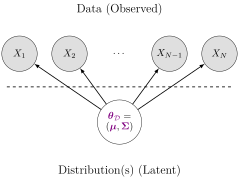
- 5650: Dive into DGPs, rather than treating as black box/footnote to Law of Large Numbers, so we can move [asymptotically!]…
- From associational statements:
«\(\underbrace{\text{An increase}}_{\small\text{noun}}\) in \(X\) by 1 is associated with increase in \(Y\) by \(\beta\)» - To causal ones: «\(\underbrace{\text{Increasing}}_{\small\text{verb}}\) \(X\) by 1 causes \(Y\) to increase by \(\beta\)»
Causality in the Social World
- Thing we observe (poking out of water): data
- Hidden but possibly discoverable via deeper dive (ecosystem under surface): DGP
- Plz remember centrality of DGP! [Heat \(\rightarrow\) Thermometer Level]
Figure 1: Will putting Mr. Guns-Dog in timeout prevent plate-breaking?
potted_plant One Last Metaphor…
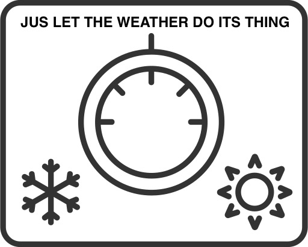
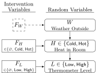
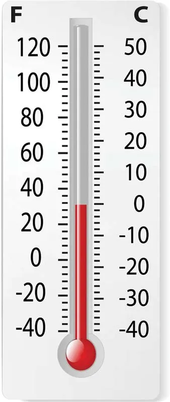
Your First PGM!
- Which of the variables (ovals) are observed? Which are latent?
- What do you think the arrows represent?
- Can we use this to find the “root cause” of (e.g.) observed chest pain? Or conversely, to predict possible ↑ in likelihood of chest pain if we start smoking?
Bayesian Inference but with Pictures
A Probabilistic Graphical Model (PGM) provides us with:
- A formal-mathematical…
- But also easily visualizable (by construction)…
- Representation of a data-generating process (DGP)!
Example: Let’s model how weather \(W\) affects evening plans \(Y\): the choice between going to a party or staying in to watch movies
DGP: The Partier’s Dilemma
- A person \(i\) wakes up with some initial affinity for partying: \(\Pr(Y_i = \textsf{Go})\)
- \(i\) then goes to their window and observes the weather \(W_i\) outside:
- If weather is sunny, \(i\)’s affinity increases: \(\Pr(Y_i = \textsf{Go} \mid W_i = \textsf{Sun}) > \Pr(Y = \textsf{Go})\)
- Otherwise, if rainy, \(i\)’s affinity decreases: \(\Pr(Y_i = \textsf{Go} \mid W_i = \textsf{Rain}) < \Pr(Y = \textsf{Go})\)
Two Main “Building Blocks”
Nodes like \(\require{enclose}\enclose{circle}{X}\) denote Random Variables:
\[ \require{enclose}\boxed{\enclose{circle}{X}} \simeq \boxed{ \begin{array}{c|cc}x & \textsf{Tails} & \textsf{Heads} \\\hline \Pr(X = x) & 0.5 & 0.5\end{array}} \]
Edges like \(\require{enclose}\enclose{circle}{X} \rightarrow \enclose{circle}{Y}\) denote relationships between RVs
What an edge “means” can get [ontologically] tricky! (We’ll change the meaning when we move to causal PGMs)
Retain sanity by just remembering: edge \(\require{enclose}\enclose{circle}{X} \rightarrow \enclose{circle}{Y}\) is included if we “care about” modeling conditional probability of \(Y\) given values of \(X\)
\[ \require{enclose}\boxed{ \enclose{circle}{X} \rightarrow \enclose{circle}{Y} } \simeq \boxed{ \begin{array}{c|cc} x & \Pr(Y = \textsf{Lose} \mid X = x) & \Pr(Y = \textsf{Win} \mid X = x) \\\hline \textsf{Tails} & 0.8 & 0.2 \\ \textsf{Heads} & 0.5 & 0.5 \end{array} } \]
Full PGM Specification
- We have fully specified a PGM \(\mathcal{G}\) once we have provided:
A list of nodes \(\{\require{enclose}\enclose{circle}{X_1}, \ldots, \enclose{circle}{X_n}\}\), one per RV \(X_i\)
Conditional Probability Tables (CPTs) specifying \(\Pr(X_i \mid \text{Pa}(X_i))\) for all \(\require{enclose}\enclose{circle}{X_i}\) - \(\text{Pa}(X_i)\) denotes all parents of \(X_i\) (sources of arrows pointing into \(\require{enclose}\enclose{circle}{X_i}\))
- Here \(\text{Pa}(\text{Cough}) = \{L, C\}\), so CPT for \(\text{Cough}\) provides \(\Pr(\text{Cough} = v \mid L = \ell, C = c)\) for all possible values \(v\) of \(\text{Cough}\), \(\ell\) of \(L\) (Lung Disease) and \(c\) of \(C\) (Cold)
- \(\text{Pa}(\text{Smokes}) = \varnothing\)! So CPT for \(\text{Smokes}\) only needs to provide \(\Pr(S = s)\) for the two possible values \(s \in \mathcal{R}_S = \{\textsf{F}, \textsf{T}\}\)

potted_plant Intervening…
Before…
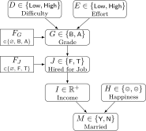
\(\textsf{do}(G \leftarrow \textsf{A})\)
…After
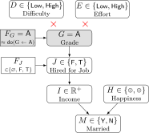
PGM for the Partier’s Dilemma
- A node \(\require{enclose}\enclose{circle}{W}\) denoting RV \(W\), which can take on values in \(\mathcal{R}_W = \{\textsf{Sun}, \textsf{Rain}\}\),
- A node \(\require{enclose}\enclose{circle}{Y}\) denoting RV \(Y\), which can take on values in \(\mathcal{R}_Y = \{\textsf{Go}, \textsf{Stay}\}\), and
- An edge \(\require{enclose}\enclose{circle}{W} \rightarrow \enclose{circle}{Y}\) representing the following relationship between \(W\) and \(Y\):
- \(\Pr(Y = \textsf{Go} \mid W = \textsf{Sun}) = 0.8\)
- \(\Pr(Y = \textsf{Stay} \mid W = \textsf{Sun}) = 0.2\)
- \(\Pr(Y = \textsf{Go} \mid W = \textsf{Rain}) = 0.1\)
- \(\Pr(Y = \textsf{Stay} \mid W = \textsf{Rain}) = 0.9\)
| \(\Pr(Y = \textsf{Stay} \mid W)\) | \(\Pr(Y = \textsf{Go} \mid W)\) | |
|---|---|---|
| \(W = \textsf{Sun}\) | 0.2 | 0.8 |
| \(W = \textsf{Rain}\) | 0.9 | 0.1 |
Observed vs. Latent Nodes
- PGMs help us make valid (Bayesian) inferences about the world in the face of incomplete information!
- \(\Rightarrow\) Two types of nodes based on available information:
- Observed nodes (shaded)
- Latent nodes (unshaded)
- \(\leadsto\) Can use our PGM as a weather-inference machine!
- If we observe \(i\) at a party, what can we infer about the weather outside [even if we can’t go outside and observe it]?
Observed Partier, Latent Weather
- We can draw this situation as a PGM with shaded and unshaded nodes, distinguishing what we know from what we’d like to infer:
| ❓ | ✅ |
- And we can now use Bayes’ Rule to compute how observed information (\(i\) at party \(\Rightarrow [Y = \textsf{Go}]\)) “flows” back into \(W\)
Computation via Bayes’ Rule
- Bayes’ Rule, \(\Pr(A \mid B) = \frac{\Pr(B \mid A)\Pr(A)}{\Pr(B)}\), tells us how to use info about \(\Pr(B \mid A)\) to obtain info about \(\Pr(A \mid B)\)!
- We use it to obtain a distribution for \(W\) updated to incorporate new info \([Y = \textsf{Go}]\):
\[ \begin{align*} &\Pr(W = \textsf{Sun} \mid Y = \textsf{Go}) = \frac{\Pr(Y = \textsf{Go} \mid W = \textsf{Sun}) \Pr(W = \textsf{Sun})}{\Pr(Y = \textsf{Go})} \\ =\, &\frac{\Pr(Y = \textsf{Go} \mid W = \textsf{Sun}) \Pr(W = \textsf{Sun})}{\Pr(Y = \textsf{Go} \mid W = \textsf{Sun}) \Pr(W = \textsf{Sun}) + \Pr(Y = \textsf{Go} \mid W = \textsf{Rain}) \Pr(W = \textsf{Rain})} \end{align*} \]
- Plug in info from CPT to obtain our new (conditional) probability of interest:
\[ \begin{align*} \Pr(W = \textsf{Sun} \mid Y = \textsf{Go}) &= \frac{(0.8)(0.5)}{(0.8)(0.5) + (0.1)(0.5)} = \frac{0.4}{0.4 + 0.05} \approx 0.89 \end{align*} \]
- We’ve learned something interesting! Observing \(i\) at the party \(\leadsto\) probability of sun jumps from \(0.5\) (“prior” estimate of \(W\), best guess without any other relevant info) to \(0.89\) (“posterior” estimate of \(W\), best guess after incorporating relevant info).
Importance of Observed vs. Latent Distinction!
- Across many different fields, hidden stumbling-block in your project may be failure to model this distinction and pursue its implications!
Example from Cognitive Neuroscience: Visual Perception
- We “see” 3D objects like a basketballs, but our eyes are (curved) 2D surfaces!
- \(\Rightarrow\) Our brains construct 3D environment by combining 2D info (observed photons-hitting-light-cones) with latent heuristic info:
- Instantaneous Binocular Disparity, fusing info from two slightly-offset eyes,
- Short-term Motion Parallax: How does object shift over short temporal “windows” of movement?
- Long-term mental models (orange-ish circle with this line pattern is usually a basketball, which is usually this big, etc.)
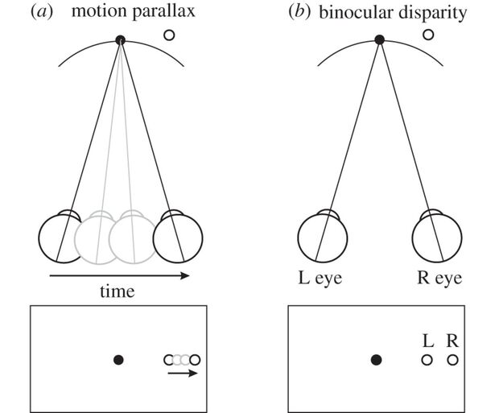
- Similar examples in many other fields \(\leadsto\) science is a strange waltz of general models vs. field-specific details, but there’s one model that is infinitely helpful imo…
Hidden Markov Models (HMMs) Are Our Ur-PGMs!
- Using “Ur” in the same sense as “America’s Ur-Choropleths”…
- HMMs are our “Ur-Models” for Computational Social Science specifically
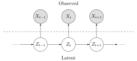

- Let’s consider an extremely currently-popular strand of CSS research, and step through why (a) it may be harder than it initially seems, but (b) we can use HMMs to “organize”/manage/visualize the complexity!
Studying “Fake News”
Studying “fake news” with ML and/or Deep Learning and/or Big Data is very popular in Computational Social Science: let’s use HMMs to see why it might be more… difficult/complicated than it seems at first 🙈
- The (implicit) model in studies like Iyengar and Kinder (2010) is something like:
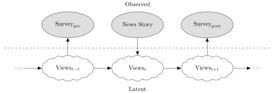
- Thus allowing results to be summarized in a table like:
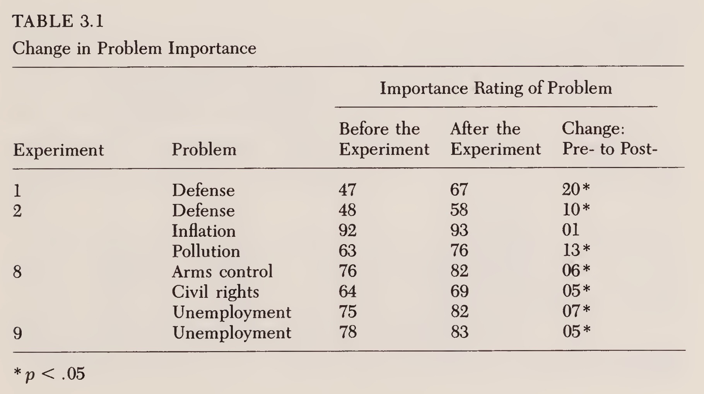
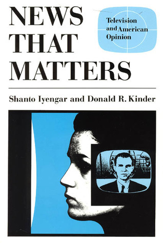
The Devil in the Details I
Residents of the New Haven, Connecticut area participated in one of two experiments, each of which spanned six consecutive days […] took place in November 1980, shortly after the presidential election
We measured problem importance with four questions that appeared in both the pretreatment and posttreatment questionnaires:
- Please indicate how important you consider these problems to be.
- Should the federal government do more to develop solutions to these problems, even if it means raising taxes?
- How much do you yourself care about these problems?
- These days how much do you talk about these problems?
The Devil in the Details II
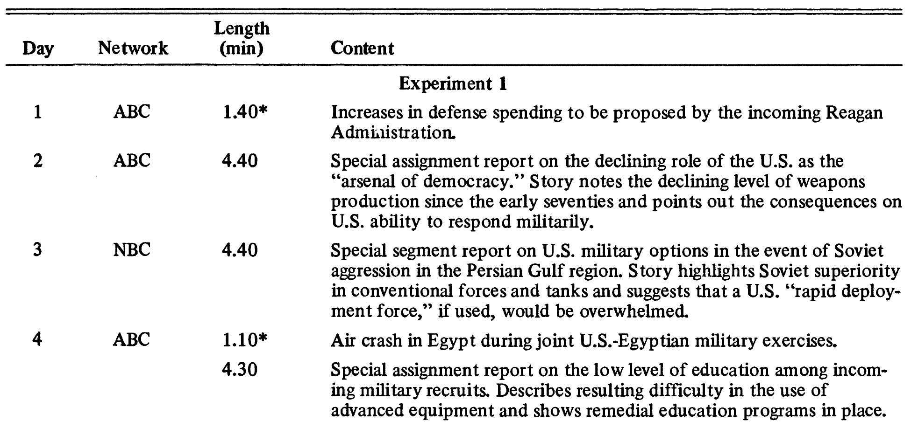
Randomization and Fine-Tuned Treatment
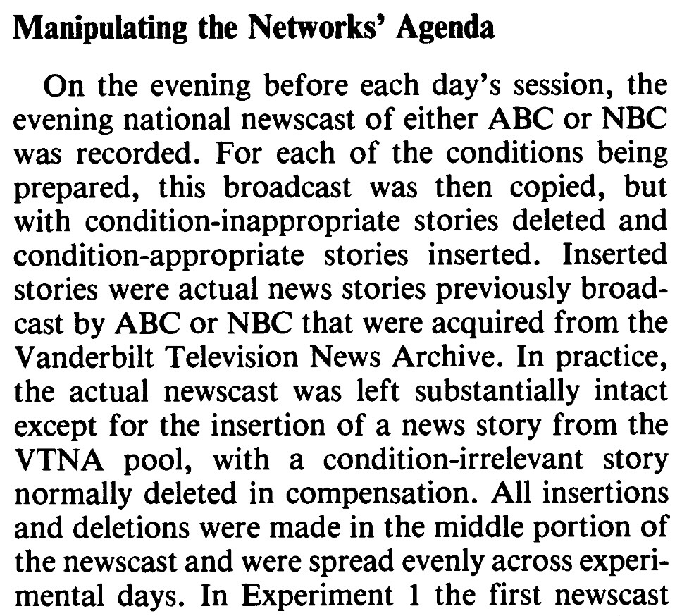
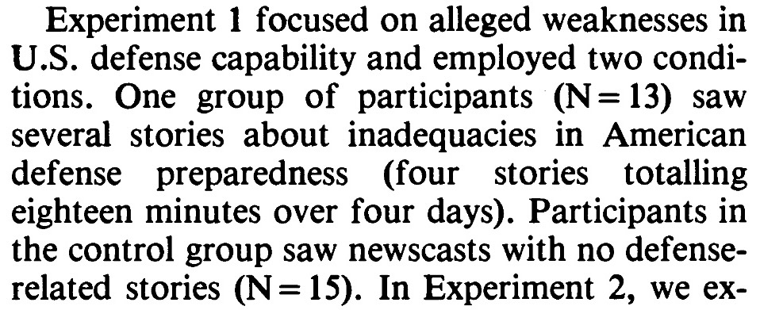
- …These are the types of things we usually don’t have control over as data scientists (we’re just handed a
.csv!)
Let’s Model It!
The Final Piece: Plate Notation
- For describing general distributions, there is often a “single node generating a bunch of nodes” structure:
- PGM notation has a built-in tool for this: plates!
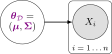
Crucial CSS Model We Can Now Dive Into!
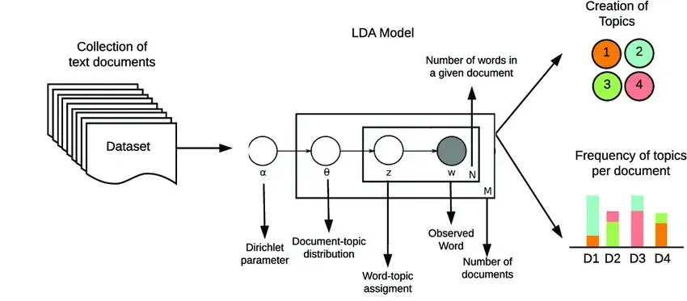
What Does This Give Us?

Before We Branch Off Of PGMs
(Even in non-causal settings)
- We don’t exactly think “Shakespeare decided on a set of topics, one per word-slot then chose a common word from each word slot”… and yet…!
Your First Causal Diagram
The Elite Hacker Known Only As GUMP
GUMP has figured out how to hack Georgetown grade servers, instantly zapping their grade up to an A+…
The Four Elemental Confounds

References
Appendix 1: Zero Probabilities
From Koller and Friedman (2009), pp. 66-67:
Zero probabilities: A common mistake is to assign a probability of zero to an event that is extremely unlikely, but not impossible. The problem is that one can never condition away a zero probability, no matter how much evidence we get. When an event is unlikely but not impossible, giving it probability zero is guaranteed to lead to irrecoverable errors. For example, in one of the early versions of the the Pathfinder system (box 3.D), 10 percent of the misdiagnoses were due to zero probability estimates given by the expert to events that were unlikely but not impossible.
Appendix 2: More Computational Social Science Examples
The Logic of Violence in Civil War

Kalyvas (2006)
Particularly Fun Non-“Standard” Examples
DSAN 5650 Week 3: PGMs as Causal Graphs